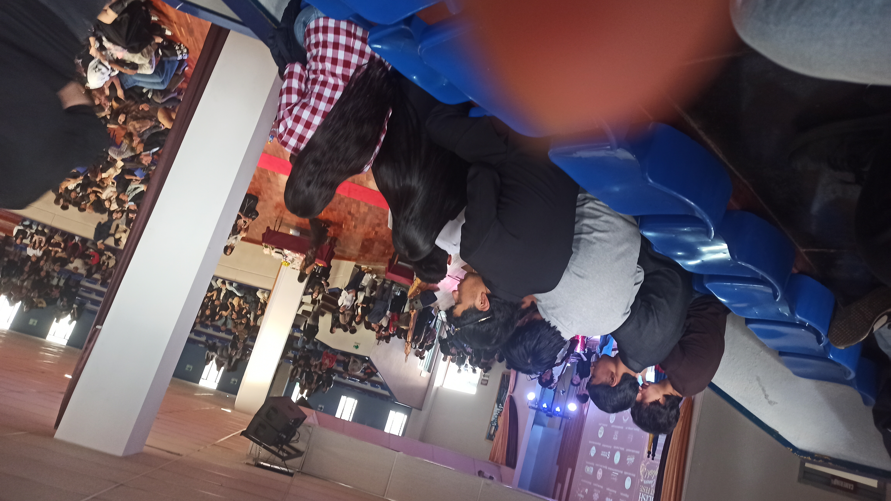

Reflexión Franciscana
A continuación comparto mis respuestas sobre las actividades realizadas y las imágenes de cada uno de los eventos de la Semana Franciscana.
Preguntas y Reflexiones
1. ¿Cómo influyeron estas actividades en tu percepción de la comunidad?
Me ayudó a compartir más con la gente de la universidad y tener momentos de sana convivencia.
2. ¿Cuál fue el momento más significativo para ti durante la Semana Franciscana?
El bici-paseo, ya que fue muy divertido hacer ejercicio mientras se recorría la ciudad junto a los compañeros.
3. ¿De qué manera te sentiste conectado con los valores franciscanos?
A través de la fraternidad y el respeto compartido durante los distintos eventos académicos y deportivos.
Galería de Actividades

Bici-paseo
Actividad de recorrido en bicicleta por la ciudad fomentando la integración y el deporte.
Cineforo
Espacio de reflexión y diálogo a través de proyecciones audiovisuales en el auditorio.
Departamento de Idiomas
Presentación y eventos culturales organizados por el área de inglés.